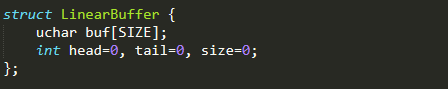
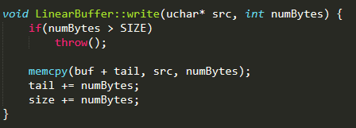
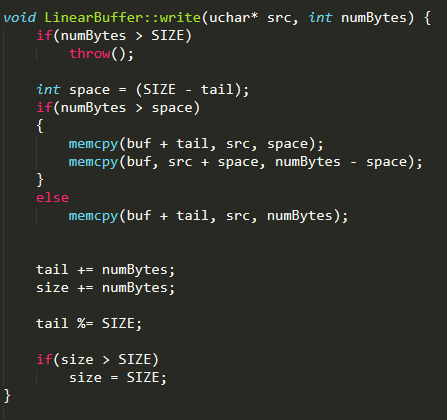
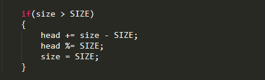

Circular Buffers & Motivations
The lovely thing about programming at a low level is you have to make due with limited resources. When you are stretching an Arduino-like board to it’s limit, and concurrently managing several real time tasks, you really need to keep this in mind.
An instructive example of the limited resources found on embedded devices is found when looking at our wireless Bluetooth communication protocol. We send packets to and from our device over Bluetooth in order to relay information or to set the type of feedback the band is giving. What happens if you take too long to parse a packet that has been received over Bluetooth? Well the Bluetooth module internally has a memory buffer that either overflows or is flushed. So the first thing you need to do is check this buffer as frequently as possible.
In some cases though, this might just not be enough. And it may be okay to miss a few packets, so you may decide to allow the buffer to overflow every so often. But another problem arises when this overflow occurs: your packets are no longer aligned with your buffer. So now you need a way to find a packet in a buffer that is potentially full of garbage.
These concerns, and others, led us to our circular buffer implementation. The circular buffer allows us to accumulate data read from the Bluetooth’s internal memory buffer, search for packets, reject any packet/buffer misalignment, and accomplishes this all without using much memory.
How It Works
A circular buffer is a simple concept, you take some linear piece of memory, and you keep track of a head and a tail.
The head indicates the next index to read from, and the tail indicates the next index to write to. Now for a write, you just write to the buffer and update the tail.
Simple right? Except the whole point of the circular buffer is that it’s circular, and all we’ve done is a linear copy! What happens when we fill the buffer? We have to wrap around to the start.
Reading is implemented similarly, reading from the buffer to another destination, moving the head, and checking for wrap arounds. Once you begin to think about the read implementation, you realize that when writing you need to check if you wrote past the head, which means the end of the write function needs a small addition.
The more important and less trivial implementation detail is actually parsing packets in place within the circular buffer, which is what allows the circular buffer to solve the issue of packet/buffer misalignment. But I won’t bore you with the details! Better yet, let’s consider this an exercise left to the user.
Testing & Validation
A humble circular buffer currently lies at the base of our communication stack, but is it really needed? As mentioned prior, if you choose to forego a circular buffer and instead read-then-parse directly from the Bluetooth module, then you are a likely to suffer from packet/buffer misalignment, whether it’s caused by buffer overflow, or some other mysterious Bluetooth quirk.
We witnessed this first hand; once we started playing around with the wireless comms, it became clear that any significant data rate would eventually result in comms going down. Debugging revealed that the device was still receiving data, but it wasn’t able to parse for a valid packet.
With the circular buffer implementation, we have managed stable communication throughout the entire development cycle, while loading the Arduino considerably both by frequently communicating with the IMU and other I2C devices, as well as putting it in data streaming modes where it generates and broadcasts data at roughly 50 Hz.